Festival Bom Gourmet
O maior festival gastronômico do Paraná. Menus exclusivos, experiências únicas e a maior conexão entre restaurantes, marcas e quem ama comer bem.
Uma temporada que movimenta o Paraná
Um mês inteiro dedicado a comer bem
Durante o Festival, restaurantes de todo o estado criam menus especiais a preços convidativos. O público descobre novos lugares, os restaurantes ganham fluxo e visibilidade, e as marcas patrocinadoras se conectam de forma autêntica com o universo gastronômico.
É live marketing na prática: experiência real, comunidade engajada e resultado de negócio mensurável.
Reviva a última edição
Fotos das últimas edições
Valor para todos os lados do ecossistema
Para restaurantes
Fluxo qualificado, novos clientes e visibilidade na maior plataforma gastronômica do estado.
Para marcas
Ativação autêntica, exposição massiva e conexão direta com consumidores e operadores de food service.
Para o público
A chance de conhecer dezenas de restaurantes com menus exclusivos e preços convidativos.
Escolha como sua marca participa
Planos flexíveis para diferentes objetivos de marca. Valores e entregas personalizáveis conforme o briefing.
Apoio
Sob consulta
- Logo nos materiais oficiais
- Menção nas redes sociais
- Presença no hotsite do Festival
Patrocínio
Sob consulta
- Tudo do plano Apoio
- Ativação de marca nos eventos
- Conteúdo dedicado e mídia
- Conexão com operadores FoodCo
- Relatório de resultados
Master
Sob consulta
- Tudo do plano Patrocínio
- Naming e exclusividade de categoria
- Experiência sob medida
- Protagonismo em toda a comunicação
Resultado que vira história
“Levar nossa marca para o Festival Bom Gourmet foi entrar de verdade na rotina do público gastronômico. O retorno superou o esperado.”
Tudo o que você precisa saber
O projeto em fotos
Leve sua marca para o Festival Bom Gourmet
Fale com nosso time comercial e descubra a cota ideal para os seus objetivos. Sua marca no centro da maior experiência gastronômica do Paraná.